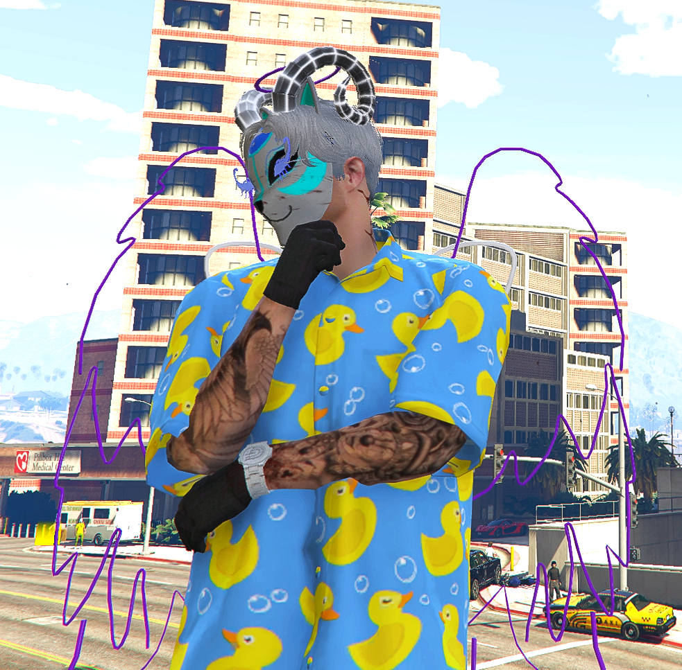

IC In Character
- Name
- Tobi Kincheck
- ID
- 192983
- Visum
- 40
Emergency Medical Services · Los Santos
„Jede Sekunde zählt!“
Tobi Kincheck

assets/img/profil.jpgMein Name ist Tobi Kincheck. Seit Anfang 2024 bin ich aktiv auf Grand DE01. In dieser Zeit durfte ich eine Menge an Erfahrung sammeln. Meine ersten begegnungen mit dem EMS machte ich im April 2024. Bereits da hat mir das EMS sehr gefallen. Als ich dann ein halbes Jahr später erneut dem EMS beitrat und zum Chefarzt befördert wurde, war mir klar, dass das EMS eine meiner Lieblingsorganisationen ist. Nun bin ich motiviert, die Emergency Medical Services mit meinem besten gewissen zu führen. Ich bin davon überzeugt, dass ich hierzu qualifiziert bin und würde mich sehr über den Leaderposten freuen.
Assistenzarzt
Chefarzt [Medical Unit - Leitung]
Officer II
HR Coordinator
Abteilungsleiter [Staatliche Gesundheitshilfe - Leitung]
Officer First Class
Director of Department [HR - Leitung]
Division Chief [PR - Leitung]
Notarzt
Head of Department [HR & Sales - Leitung
Personalmanager
Fünf Eigenschaften, die mich als Leader auszeichnen.
Ich bringe Erfahrung in verschiedenen Leitungspositionen mit.
Egal welches Geschlecht, Rang, Hautfarbe oder ob befreundet - ALLE werden gleich behandelt.
Ich bin eine Geduldige Person. Sollte jemand etwas nicht verstehen, bleibe ich ruhig und versuche es so zu erklären, dass die Person dies versteht.
Ich kenne mich mit den Serverregeln und IC-Gesetzen aus.
Ich bin mindestens 2 Stunden täglich online. Auch ausserhalb dieses Zeitfensters bin ich fast durchgehen per Discord erreichbar.
Abteilungskonzept des EMS!
Personalmanagement, Bewerbungen, Beförderungen, Sanktionen, usw.
Durchführung von Ausbildungen, Schulungen & Prüfungen
Medikamentenherstellung und transport
Durchführung von chirurgischen Eingriffen, grösseren Behandlungen
Therapie-Sitzungen
Durchführung von Organisations-Untersuchungen, Erste-Hilfe-Kursen, usw.
Öffentlichkeitsarbeit - Verfassen von Berichten, durchführen von Events, usw.
Durchführung von Lufteinsätzen
Was ich als Leader konkret verändern werde.
Regelmässige Ausbildung mit überarbeitetem Konzept und Praxisteil.
Upranks erfolgen regelmässig durch den Abteilungsleiter.
Die Zusammenarbeit zwischen den Organisationen soll gestärkt werden. Unter anderem durch regelmässige Organisations-Untersuchungen.
Bewerbungen sind täglich in der Dienstzeit durch die HR möglich. Um möglichst schnell in den Dienst zu starten, finden regelmässige Grundausbildungen statt.
Kurze Daily-Meetings finden täglich statt. Es werden die wichtigsten Neuigkeiten besprochen und die Mitarbeiter eingeteilt.
Falls Möglich, werden auszahlungen eingeführt. Medics sollen für ihre Leistung durch einen grosszügigen Bonus belohnt werden.
Vielen Dank für das Lesen meiner Bewerbung.
Ich freue mich auf ein persönliches Gespräch mit euch.
Tobi Kincheck